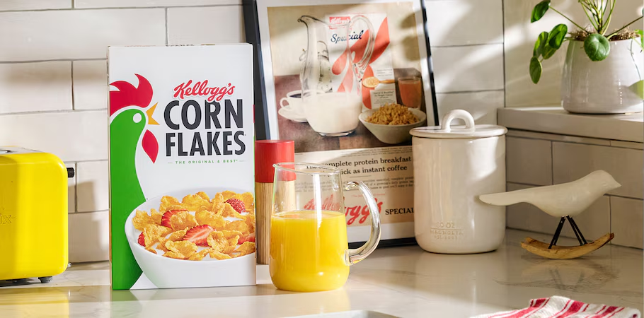

Welcome to VKellogg's, a leader in the breakfast foods industry, renowned for our commitment to quality, innovation, and nutrition.
Founded over a century ago and become a household name, synonymous with delicious cereals and snacks enjoyed by millions worldwide.

Our History
1906: The Beginning
VKellogg's was established by Will Keith Kellogg in 1906 in Battle Creek, Michigan. Our journey started with the invention of the iconic Corn Flakes, a product that revolutionized the way people began their day. Will Keith Kellogg's vision was to create nutritious and delicious breakfast options that were easily accessible to everyone.
Expansion and Innovation
Over the decades, VKellogg's expanded its product line to include a wide variety of cereals catering to different tastes and nutritional needs. From the sweet and colorful Froot Loops to the fiber-rich All-Bran, our commitment to innovation has kept us at the forefront of the breakfast foods industry. Each product reflects our dedication to quality and our desire to provide wholesome and enjoyable food choices.
Global Growth
VKellogg's has grown from a small operation in Michigan to a global company with a presence in over 180 countries. Our products have become a staple in households around the world, loved by children and adults alike. We continue to expand our reach, bringing the VKellogg's promise of quality and nutrition to new markets and communities.